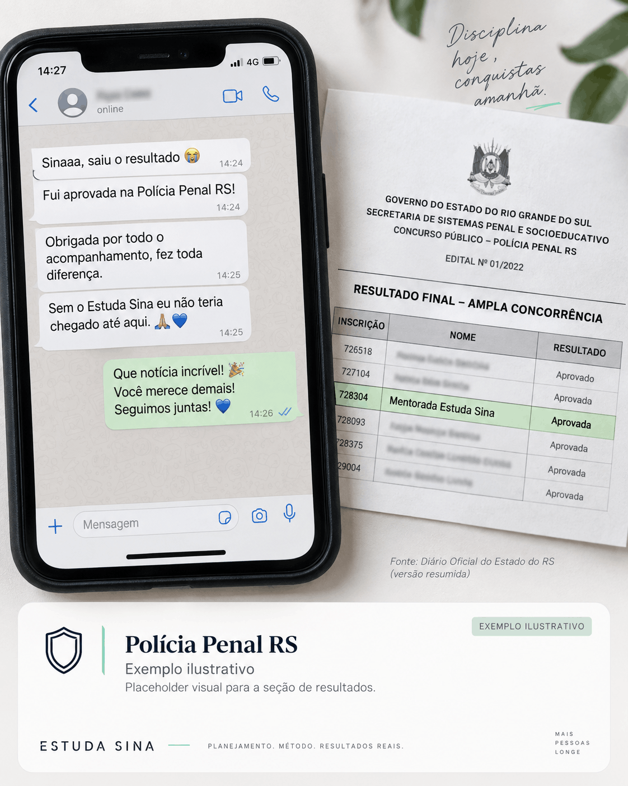

Sem direção
Você estuda o que aparece, em vez de saber exatamente o que priorizar em cada etapa da preparação.
Método Estuda Sina
Transforme suas horas de estudo em uma preparação com método, direção e evolução mensurável.
Para OAB e concursos públicos. Um método criado e validado por quem vive o processo e já conquistou múltiplas aprovações.
O problema não é falta de esforço
Estudar muitas horas não garante evolução. Dá para passar uma tarde inteira em videoaulas, assistir tudo no automático como quem maratona uma série e terminar com sensação de produtividade — sem realmente testar, recuperar e aplicar o que foi estudado. Consumir conteúdo não é a mesma coisa que estudar.
Você estuda o que aparece, em vez de saber exatamente o que priorizar em cada etapa da preparação.
Quando a estratégia para de funcionar, você demora a perceber e continua repetindo o mesmo plano.
Horas estudadas dizem pouco sem acompanhar questões, acertos, consistência e evolução ao longo do tempo.
O conteúdo entra, mas não se consolida. Sem um ciclo de revisão, parte do esforço desaparece semanas depois.
Método Estuda Sina
A preparação deixa de ser uma sequência de tarefas soltas e passa a funcionar como um ciclo: você define prioridades, executa, revisa, mede o resultado e usa os dados para decidir o próximo passo.
Transforme edital, tempo disponível e prioridades em uma rotina que você realmente consegue executar.
Estudo ativo, foco e questões. Menos sensação de produtividade e mais trabalho que gera aprendizagem.
Volte ao conteúdo no momento certo para consolidar o que importa e reduzir o esquecimento.
Acompanhe questões, acertos, tempo e consistência para enxergar progresso de forma objetiva.
Use o desempenho para redefinir prioridades e começar um novo ciclo mais inteligente que o anterior.
Escolha como aplicar o método
A base é a mesma: planejamento, execução, revisão, mensuração e ajuste. O que muda é quanto suporte você quer ao longo do caminho.
Método com autonomia
Para quem quer aprender a estruturar a própria preparação e aplicar o Método Estuda Sina com clareza, organização e independência.
Método + acompanhamento
Para quem quer uma preparação conduzida de perto, com estratégia personalizada, metas e ajustes de acordo com a própria realidade e evolução.
O Curso Estuda Sina está em desenvolvimento. A estrutura final, plataforma, condições de acesso e lançamento ainda serão definidos.
Resultados reais
Aprovação é consequência de muitos fatores — e nenhum método pode prometer resultado. Mas histórias concretas mostram o que acontece quando estratégia, execução e acompanhamento começam a trabalhar juntos.

Este card está usando uma imagem temporária apenas para validar o layout. Na versão final, cada destaque será substituído por uma aprovação real, com contexto, identificação e comprovação autorizada.
Percentual de acertos, consistência, rotina e aprovações serão apresentados com contexto, sem promessas fáceis.
Camila Ribeiro · nome e relato temporários
“Na reta final eu queria revisar tudo de novo e estava ficando desesperada. A Sina me ajudou a cortar o excesso, priorizar o que fazia sentido e confiar no que eu já tinha construído. Quando saiu o resultado, foi um alívio que eu nem consigo explicar.”
Renata Duarte · nome e relato temporários
“Eu achava que precisava estudar cada vez mais horas. O que mudou foi parar de estudar no automático e começar a ajustar a semana pelo que eu realmente estava errando. Quando vi meu nome no resultado do TJ/RJ, demorei alguns segundos pra acreditar.”
Conteúdo desta seção é temporário para validação visual e será substituído por resultados reais antes da publicação final.
Quem está por trás do método
Aos 22 anos, ainda na faculdade e conciliando a rotina de estudos com o trabalho em um posto de combustível, Sinara conquistou seu primeiro cargo efetivo em concurso público.
A preparação esteve longe de ser uma linha reta. Entre erros, ajustes, revisões e muitas questões, ela foi entendendo que estudar melhor exigia mais do que acumular horas: era preciso planejar, medir o desempenho e corrigir a rota.
Essa experiência, somada a 12+ aprovações em concursos públicos, deu origem ao Método Estuda Sina — uma forma de organizar a preparação com mais clareza, constância e estratégia.
E o método deixou de transformar apenas a própria trajetória. Ao longo dos anos, Sinara já ajudou mais de 100 pessoas a chegar a aprovações e, em muitos casos, à nomeação e à posse em concursos públicos.
Sem fórmula mágica. O Estuda Sina nasceu para encurtar a distância entre esforço e direção — usando estratégia, acompanhamento e ajustes que façam sentido na vida real.
Antes de começar
O objetivo é deixar claro o que o Estuda Sina faz, para quem ele faz sentido e o que você pode esperar do método — sem promessa fácil e sem complicação.
Sim. A lógica do método é aplicada à preparação para OAB e diferentes concursos públicos: organizar prioridades, executar, revisar, acompanhar desempenho e ajustar a estratégia conforme a evolução.
Não. O ponto não é criar uma rotina idealizada, e sim construir uma preparação que caiba na vida real. O planejamento considera o tempo disponível e ajuda a concentrar energia no que tem mais impacto.
No curso, a proposta é aprender a aplicar o método com mais autonomia. Na mentoria, além do método, existe acompanhamento individual, metas e ajustes de acordo com a sua rotina e evolução. O Curso Estuda Sina ainda está em desenvolvimento.
Não. A proposta é justamente evitar um modelo genérico. Na mentoria, o plano é construído considerando objetivo, rotina, estágio da preparação e desempenho, e pode ser ajustado conforme os dados mostram novas prioridades.
Não. Nenhum método sério pode garantir aprovação. O Estuda Sina organiza a preparação para que você estude com mais direção, consistência e capacidade de corrigir a rota. O resultado também depende da execução, do contexto e da própria prova.
Se você quer aprender o método e conduzir sua própria preparação, o curso será o caminho mais indicado quando estiver disponível. Se prefere acompanhamento individual e uma estratégia construída junto com você, conheça a Mentoria Estuda Sina.
Seu próximo passo
Escolha a forma que combina com o seu momento: aprender o método com autonomia ou ter Sinara acompanhando sua preparação de perto.